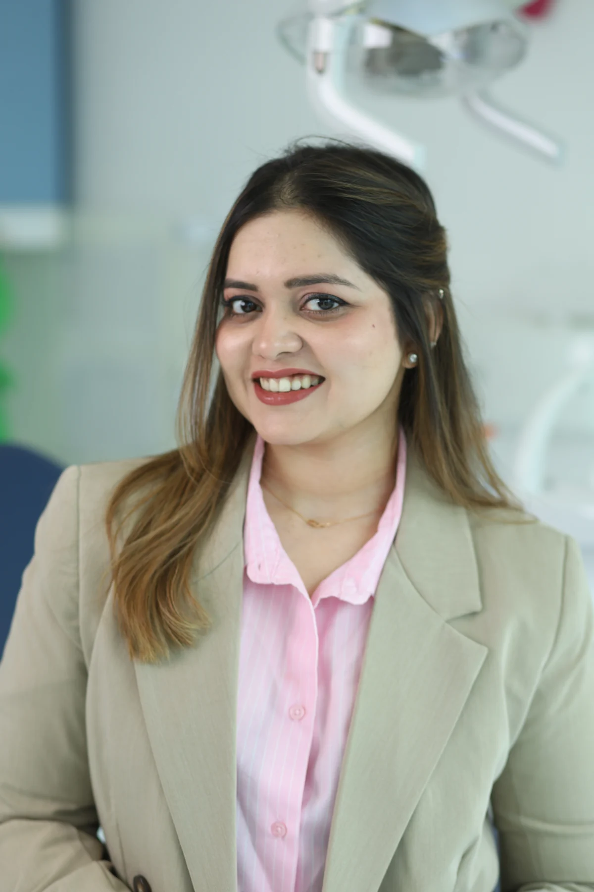

We start by listening.
Tell me what worries your child and what helps them feel comfortable. I use behaviour guidance to support children who feel anxious about dental visits.
Specialist Pediatric & Preventive Dentist.
Here for your child and for you.
I care for children as their teeth grow and change. I listen to their questions and worries, explain what I find and help parents understand the options.
Arrange a visit Abu Dhabi · Dubai
Every child has their own worries, preferences and way of communicating.
Tell me what worries your child and what helps them feel comfortable. I use behaviour guidance to support children who feel anxious about dental visits.
I explain what I find, discuss prevention and treatment options, and make time for your questions.
I have experience caring for children with additional healthcare and communication needs, including children with autism and ADHD. I adapt each visit to their needs and preferences.
I have over 11 years of clinical experience in India and the UAE, with a focus on children’s dentistry.
Pediatric & Preventive Dentistry
Rajiv Gandhi University of Health Sciences
Dr. D. Y. Patil Deemed University
Nitrous oxide conscious sedation · CAPP
Interceptive and myofunctional orthodontics · Myobrace
Hospital-based dentistry
Basic, pediatric and advanced life-support training.
My experience includes children’s dentistry
and clinic leadership in India and the UAE.
Specialist Pediatric Dentist
Al Raha · Abu Dhabi
Specialist Pediatric Dentist
Al Karama · Dubai
Specialist Pediatric Dentist
Business Bay · Dubai
Specialist Pediatric Dentist
Al Bada’a · Dubai
Part-time specialist pediatric dentist in Dubai Silicon Oasis.
Pediatric dentist and clinic head.
Pediatric dentistry at Dr. Patil’s Dental Studio, Khopoli, and external consultations.

Find me
on Instagram.
For a look at my day-to-day work in children’s dentistry, follow me on Instagram.
@dr.kashmirapawar View my clinical portfolio